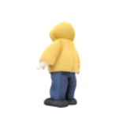
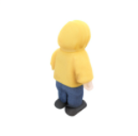
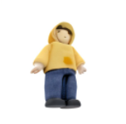
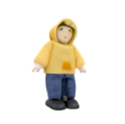
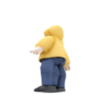
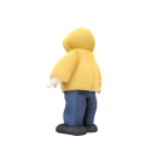
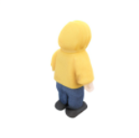
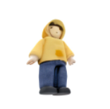
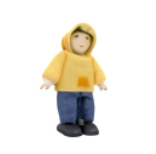
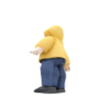

Abstract
Although text-to-image (T2I) models have recently thrived as visual generative priors, their reliance on high-quality text-image pairs makes scaling up expensive. We argue that grasping the cross-modality alignment is not a necessity for a sound visual generative prior, whose focus should be on texture modeling. Such a philosophy inspires us to study image-to-image (I2I) generation, where models can learn from in-the-wild images in a self-supervised manner. We first develop a pure vision-based training framework, Lumos, and confirm the feasibility and the scalability of learning I2I models. We then find that, as an upstream task of T2I, our I2I model serves as a more foundational visual prior and achieves on-par or better performance than existing T2I models using only 1/10 text-image pairs for fine-tuning. We further demonstrate the superiority of I2I priors over T2I priors on some text-irrelevant visual generative tasks, like image-to-3D and image-to-video.
Text-to-Image Generation
Swipe to see more cases

A dragon made of molten chocolate, with scales that glisten like gold leaf and eyes of crystalline sugar

A curious dolphin leaping out of the water, creating splashes in the sunlight

A baby rabbit wearing a tiny knitted hat, ultra-detailed, photorealistic

Bentley Bacalar driving on black tarmac road with trees in background, Sumi-e drawing, white background 8k
A bear with fur made of chocolate shavings, standing in a clearing filled with marshmallow mushrooms

A rustic bedroom showcasing a round bed, earth-toned decor, and a cluttered, yet charming ambiance

A close-up of a vibrant, fully bloomed red rose with dew drops on its petals

A close-up photograph of a lion with its mane blowing in the wind against the savanna backdrop

A breathtaking view of the Swiss Alps during sunrise, with snow-capped peaks and lush green valleys, ultra-realistic, high detail

A close-up of a sunlit butterfly resting on a flower in a garden

A cyborg superhero with a robotic arm and high-tech gadgets, standing atop a skyscraper

A detailed close-up of a rusted vintage car abandoned in an overgrown field
This professional photo from National Geography shows the subtleties in a erased face of god in the shape of the subtle cloud but we can clearly see the face of almighty god with this stormy atmosphere that is brewing in this Nevada desert, volumetric lighting, high contrast

A gorilla wearing an advanced robotic suit with pulsating energy cores, standing on the edge of a futuristic skyline

A group of astronauts standing on the surface of Mars, with Earth visible in the distant sky
A hippopotamus with a body of jelly-like translucent gelatin, lounging in a pool of liquid sherbet

A lion made entirely of layered caramel and chocolate, with a mane composed of spun sugar flames

A lion with a mane made of holographic flames, standing on a crystal platform in a neon-lit jungle

A majestic bald eagle soaring over a snowy mountain range

A majestic mountain range under a starry sky, with swirling clouds and glowing moonlight, inspired by Van Gogh

A peaceful forest in autumn, with golden leaves falling and a stream running through it, illuminated by soft sunlight

A peaceful mountain lake reflecting the surrounding pine trees and snowy peaks, photorealistic, tranquil

A phoenix-like bird with wings made of fiery red fruit leather and a beak of candied citrus peel

A realistic photograph of a wolf howling at the moon in a snowy forest

A stealthy ninja superhero in a dark alley, showcasing agility and advanced technology

A wolf constructed from layers of dark chocolate and nougat, with glowing eyes made of candied cherries

Kraken is listening to music with headphones

An owl constructed from layers of caramel popcorn and hazelnut chocolate, perched on a pretzel branch

anime husband and wife dressing in modern trendy clothes by Calvin Klein kissing intens, dynamic pose, big watery eyes, long-shot, digital art, brush strokes, painterly, impressionist style, half painted

beautiful lady,freckles, big smile,blue eyes, short ginger hair, dark makeup, wearing a floral blue vest top, soft light,dark grey background, digital art, brush strokes, painterly, impressionist style, half painted

The picture shows a cute little tiger, wearing a blue hoodie and hat, sitting on a small cardboard boat on calm water

Documentary-style photography of a bustling marketplace in Marrakech, with spices and textiles

golden sunset shines on the top of snow-capped mountains, with small villages at its foot and surrounding buildings

Post-Apocalyptic Wanderer, character design, style by kim jung gi, zabrocki, karlkka, jayison devadas, 8k

Two baby ducks swimming in a pond at sunset, highly detailed, hyper-realistic

Two female rabbit adventurers dressed in a fancy velvet coats next to a Christmas tree, Christmas theme, on an antique opulent background , jean - baptiste monge , smooth, anthropomorphic photorealistic, photography, lifelike, high resolution, smooth
Novel View Synthesis
Click to see different cases
 








